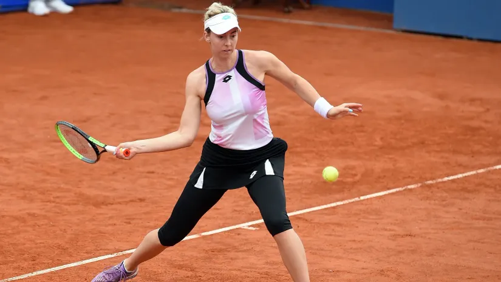

Olga nije sama: Srbija ima dve teniserke u glavnom žrebu Rolan Garosa
Nina Stojanović zaslužila prvo kolo Frenč Opena, Lola Radivojević stala na poslednjoj prepreci
Žreb je sevirao rivale srpskim teniserima i teniserkama na Rolan Garosu, a koji sat nakon ceremonije, ispostavilo se da Srbiju u glavnom žrebu Frenč Opena neće predstavljati samo Olga Danilović. Mogla je naša zemlja do čak tri predstavnice u prvom kolu pariskog grend slema, ali će na kraju imati dve jer je Nina Stojanović izvojevala pobedu u poslednjoj rundi kvalifikacija, dok je Lola Radivojević izgubila u tesnom meču.
Stojanovićeva je uprkos izgubljenom prvom setu došla do velikog preokreta protiv Amerikanke Varvare Lepčenko - 1:2 (6:4, 1:6, 5:7). Prošla je rođena Beograđanka kroz dramu u odlučujućem setu, na 6:5 servirala za plasman u prvo kolo, propustila dve meč lopte, ali je to nije pokolebalo. Preživela je brejk loptu, a zatim unovčila četvrtu meč loptu.
Kada je reč o Radivojevićevoj, neuspešno je zavrila dvočasovnu borbu sa Oksanom Selehmetevom iako je nakon izgubljenog prvog seta uspela da se vrati i odvede meč u odlučujući set. Njega je teniserka iz Blaca otvorila prilično loše, dozvolila rivalki dva brejka i prednost 3:0, ali se ekspresno vratila serijom od četiri gema. Delovalo je da će na talasu tog samopoudanja jahati do glavnog žreba, ali je na 4:4 dozvolila protivnici da joj oduzme servis, pa će morati još da čeka na glavni žreb nekog grend slem turnira.
Stojanovićevoj će ovo biti treći put da se takmiči u prvom kolu Rolan Garosa, a nije uspevala da ode dalje 2020. i 2021. godine.